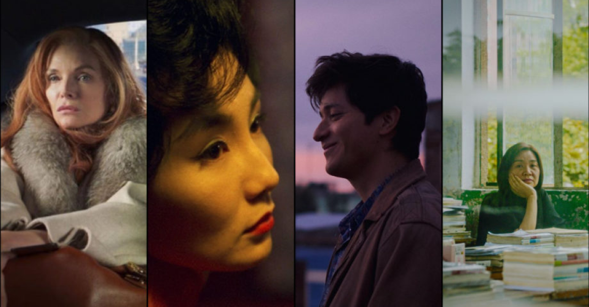

Home > Film > Comming Soon
Announcing Our Spring Programming Slate and Reopening Health & Safety Protocols
By Film at Lincoln Center on March 30, 2021 in News
Film at Lincoln Center will reopen its theaters Friday, April 16, following a yearlong closure prompted by the COVID-19 pandemic. The safety of audiences and staff remains FLC’s first priority as the organization resumes in-person operations, continuing its mission to support the art and elevate the craft of cinema.
FLC’s Elinor Bunin Munroe Film Center will open its doors first, screening NYFF58 Closing Night selection French Exit, directed by Azazel Jacobs, and a new restoration of Andrei Tarkovsky’s Mirror in the venue’s two cinemas. The beloved Walter Reade Theater, hailed as “the best place in Manhattan to watch a movie” (A. O. Scott, The New York Times), will reopen in the weeks following, after minor renovations are completed.
New Directors/New Films, co-presented with The Museum of Modern Art, celebrates its 50th anniversary this year. The first New York City film festival to return to theaters, this landmark edition of ND/NF will be presented both in-theater at FLC and in the FLC and MoMA virtual cinemas. This year’s lineup and showtime details will be announced in the coming weeks.
In-theater spring programming includes:
Azazel Jacobs’s French Exit—opening April 16 Andrei Tarkovsky’s Mirror—opening April 16 New Directors/New Films—April 28 – May 8 Wong Kar Wai’s In the Mood for Love—opening May 14 World of Wong Kar Wai—May 14-20 Jia Zhangke’s Swimming Out Till the Sea Turns Blue—opening May 28 Exclusive! Christian Petzold’s Undine—opening June 4 François Ozon’s Summer of ’85—opening June 18 Film at Lincoln Center’s theaters will operate at 25% capacity in accordance with New York State guidelines, in addition to implementing the following enhanced safety measures:
Mandatory masks for staff and audience members at all times No concessions and no outside food or beverages permitted Socially-distanced reserved seating for all screenings Contactless ticketing Enhanced HVAC filtration and system performance Increased time between screenings to facilitate thorough cleaning and minimize interactions Full health and safety protocols available on the FLC website When movie theaters shuttered in March 2020, FLC introduced its Virtual Cinema, allowing movie lovers across the country to enjoy the organization’s unparalleled programming, including new releases, festivals, and repertory titles, from the safety and comfort of their homes. Now, as FLC’s theaters reopen, this new tradition continues.
Virtual spring programming includes:
New Directors/New Films—April 28 – May 8 Human Rights Watch Film Festival—May 19-26 Open Roads: New Italian Cinema—May 28 – June 6 Hong Sangsoo’s The Power of Kangwon Province—opening June 11 “When we closed last March, we never imagined that our theaters would be dark for more than a year, and it is thanks to the support of our devoted audience that we were able to sustain ourselves until we could open safely,” said Lesli Klainberg, FLC Executive Director. “It’s been incredibly gratifying to reach people across the country through our virtual cinema, and we’re excited to keep growing that community. But we’re also still a hometown movie theater, now the only art-house cinema on the Upper West Side, and we’re eager to open our doors to our community of New Yorkers, far and wide. We can’t wait to welcome you back.”
In-theater tickets for French Exit and Mirror will go on sale Wednesday at noon, and are $15; $12 for students, seniors (62+), and persons with disabilities; and $10 for Film at Lincoln Center members. Virtual and in-theater tickets for New Directors/New Films will go on sale April 16, with a pre-sale period for FLC and MoMA members beginning April 13. On-sale dates and ticket information for the complete spring lineup will be announced in the coming weeks. Since we are a nonprofit organization, members play a vital role in our success and help to support FLC’s reopening efforts. More information on membership and ways to support FLC is available here.
New releases and revival runs are organized by Florence Almozini, Dennis Lim, and Tyler Wilson.
FILMS & DESCRIPTIONS
FLC = In-theater at the Elinor Bunin Munroe Film Center (144 W. 65th St.) or Walter Reade Theater (165 W. 65th St)
VC = Virtual Cinema (Available nationwide)
April 9-18—VC
Youn Yuh-jung
Introduced to a wide American audience just last year with her scene-stealing turn as a strong-willed grandmother in Lee Isaac Chung’s Minari, Youn Yuh-jung has been a celebrated screen performer in her native Korea for half a century, giving life to a roster of singularly formidable women across genres and generations, encompassing femmes fatales and concubines, landladies and movie stars. In honor of her historic Oscar nomination this year—Youn and her co-star Steven Yeun are the first Korean actors ever nominated—Film at Lincoln Center is proud to present a five-film retrospective of her recent work, including a live, in-depth virtual conversation with the artist.
Opening April 16—FLC
French Exit
Azazel Jacobs, 2020, USA, 110mEnglish and French with English subtitles
Michelle Pfeiffer is entirely bewitching as Frances Price, an imperious, widowed New York socialite whose once-extreme wealth has dwindled down to a nub. Facing insolvency, she makes the decision to escape the city by cruise ship and relocate to her friend’s empty Paris apartment with her dyspeptic son, Malcolm (Lucas Hedges), and their mercurial cat, Small Frank (voiced by Tracy Letts). There, Frances and Malcolm reckon with their pasts and plan for an impossible future, all while their social circle expands in unexpected and increasingly absurdist ways. This adaptation of the best-selling novel by Patrick deWitt is a rare American film of genuine eccentricity, elegantly directed by Azazel Jacobs (The Lovers), and featuring a brilliant performance of stylish severity by Pfeiffer, whose every intonation is a wonder to behold. NYFF58 Closing Night selection. A Sony Pictures Classics release.
April 28 – May 8—FLC & VC
New Directors/New Films
Celebrating its 50th anniversary in 2021, the New Directors/New Films festival introduces audiences to the work of emerging filmmakers from around the world. Throughout its rich history, New Directors has brought previously little-known talents like Spike Lee, Chantal Akerman, Bi Gan, Valérie Massadian, Gabriel Mascaro, RaMell Ross, and Kelly Reichardt to wider audiences. Join us in celebrating a group of filmmakers who represent the present and anticipate the future of cinema: daring artists whose work pushes the envelope and is never what you’d expect. Presented by Film at Lincoln Center and The Museum of Modern Art.
Opening May 14—FLC
In the Mood for Love – New Restoration!
Wong Kar Wai, 2000, Hong Kong, 98m
Cantonese, Shanghainese, French, and Spanish with English subtitles
Hong Kong, 1962: Chow Mo-Wan (Tony Leung) and Su Li-Zhen (Maggie Cheung) move into neighboring apartments on the same day. Their encounters are formal and polite—until a discovery about their spouses creates an intimate bond between them. At once delicately mannered and visually extravagant, In the Mood for Love is a masterful evocation of romantic yearning and its fleeting moments. With its aching soundtrack and exquisitely abstract cinematography by Christopher Doyle and Mark Lee Ping-Bing, this film has been a major stylistic influence on the decades of cinema since its release, and is a milestone in Wong’s redoubtable career. An NYFF38 Main Slate selection and an NYFF58 Revivals selection. A Janus Films release and part of World of Wong Kar Wai. This 4K digital restoration was undertaken from the 35mm original camera negative by the Criterion Collection in collaboration with Jet Tone Films, L’Immagine Ritrovata, One Cool, and Robert Mackenzie Sound. Supervised and approved by Wong Kar Wai.

May 14-20—FLC
World of Wong Kar Wai
Contemporary cinema’s supreme rhapsodist of romantic longing, Wong Kar Wai makes mesmerizing mood pieces that swirl around themes of time, dislocation, and the yearning for human connection. Ever since exploding onto the international scene in 1994 with his third feature, Chungking Express—an art-house sensation that would become one of the defining works of the Hong Kong New Wave—Wong has been refining his signature style, marked by woozy, hallucinatory visuals (often shot in sumptuous color by frequent cinematographer Christopher Doyle); the indelible use of pop music; and elliptical editing that evokes the impressionistic haze of memory. Though he’s renowned for his sublime studies of love and its absence, Wong’s small but exquisite filmography encompasses idiosyncratic forays into science fiction, crime thrillers, and the martial arts epic, all infused with his trademark motifs and swooning style. This May, Film at Lincoln Center is pleased to bring back a selection of some of Wong’s most dazzling films, newly restored and on the big screen. Presented in partnership with Janus Films.
May 19-26—VC
Human Rights Watch Film Festival
Human Rights Watch is one of the world’s leading independent organizations dedicated to defending and protecting human rights, and its annual film festival is a vital forum for movies that tackle important global issues. Showcasing an international selection of acclaimed works that bring human rights struggles to life through storytelling, the Human Rights Watch Film Festival presents challenging, provocative art that calls for justice and social change. Selections in recent years have included some of the most urgent documentary and fiction films of our time (including The Act of Killing, Crip Camp, Collective, Dheepan, The Invisible War, Iraq in Fragments, The Oath, Restrepo, Whose Streets? and Welcome to Chechnya), and this year will again feature essential and entertaining films everyone will be talking about. Organized by Human Rights Watch and co-presented with Film at Lincoln Center and IFC Center.
May 28 – June 6—VC
Open Roads: New Italian Cinema
Open Roads: New Italian Cinema is the only screening series to offer North American audiences a diverse and extensive lineup of contemporary Italian films. This year’s edition again strikes a balance between emerging talents and esteemed veterans, commercial and independent fare, outrageous comedies, gripping dramas, and captivating documentaries. Co-presented by Film at Lincoln Center and Istituto Luce Cinecittà.

Opening May 28—FLC Exclusive!
Swimming Out Till the Sea Turns Blue
Jia Zhangke, 2020, China, 111m
Mandarin with English subtitles
The preeminent cinematic chronicler of 21st-century China, Jia Zhangke turns his sights to the more distant past in his surprising, complexly wrought new documentary. In Shanxi province, where Jia grew up, the filmmaker gathers three prominent authors—Jia Pingwa, Yu Hua, and Liang Hong—and evokes the legacy of the late writer Ma Feng, to create a tapestry of testimonies about the drastic changes in Chinese life and culture that began with the social revolution of the ’50s. In 18 chapters, interspersed with evocative, impressionistic interludes, Jia tells a wide-ranging, discursive story that touches upon movements in literature, the experiences of farmers and intellectuals, and urban versus rural living, and functions as a reminder of the essential power of verbally passing down history to future generations. An NYFF58 selection. A Cinema Guild release.
Opening June 4—FLC
Undine
Christian Petzold, 2020, Germany, 90m
German with English subtitles
At first blush, the new film from Christian Petzold might seem a departure for the German director, especially to those only acquainted with him from his recent triumvirate of masterful films about the romantic and identity crises of refugees at different points in German history: Barbara (NYFF50), Phoenix, and Transit (NYFF56). Yet Petzold has long been toying with established genres, and with Undine he injects a supernatural element into a melodrama of star-crossed lovers—the title character (Paula Beer), a historian and tour guide at the Berlin City Museum specializing in urban development, and industrial diver Christoph (Franz Rogowski, Beer’s co-star in Transit). Linked by a love of the water, Undine and Christoph form an intense bond, which can only do so much to help her overcome the considerable baggage of her former affair. The story of a contemporary relationship guided by age-old cosmic fate, Petzold’s film contains indelible images of lush romanticism while remaining scrupulously enigmatic. An NYFF58 selection. An IFC Films release.
Opening June 11—VC
The Power of Kangwon Province
Hong Sangsoo, South Korea, 1998, 110m
Korean with English subtitles
Hong Sangsoo followed his acclaimed 1996 debut, The Day a Pig Fell into the Well, with this understated diptych concerning a popular retreat in Kangwon, a mountainous region near Seoul. At first, the film centers on the recently single Jisook, who joins two friends on vacation and falls into a romantic entanglement with a local policeman. Then, the focus shifts to a listless professor, Sangkwon, visiting Kangwon at the same time as Jisook. Already in his sophomore feature, Hong’s soon-to-be signatures of knotted affairs and boozy small talk unfold across a bold yet unassuming structural experiment that invites multiple viewings. New 2K restoration. A Grasshopper Film release.
Opening June 18—FLC
Summer of ’85 / Été ’85
François Ozon, 2020, France/Belgium, 100m
English and French with English subtitles
The French Riviera, 1985. Budding teenage writer Alexis (Félix Lefebvre, School’s Out, Rendez-Vous 2019) capsizes while he’s out sailing on a stormy afternoon, but he’s saved from certain death by the statuesque, mercurial David (Benjamin Voisin). They become fast friends, and Alexis starts working for David’s affectionate but scattered mother (Valeria Bruni Tedeschi, star and director of A Castle in Italy). Alexis’s attraction to David soon blossoms into passion, but turns, by the end of the summer, into a deeper meditation on mortality and the unknown. Awash in sun-kissed pastels and period-appropriate tracks from The Cure, Summer of ’85 is a cursed romance in the key of Rimbaud and Verlaine that pulls apart the comforts of nostalgia in the heat of the present. A Rendez-Vous with French Cinema 2021 selection. A Music Box release.
Opening July 9—FLC
The Woman Who Ran
Hong Sangsoo, 2020, South Korea, 77m
Korean with English subtitles
Men are mostly, amusingly sidelined in Hong Sangsoo’s recent delight, which is anchored by the director’s regular collaborator—and real-life partner—Kim Minhee as the peripatetic Gamhee. Divided into three casually threaded yet distinct sections, the film follows Gamhee as she travels without her husband for the first time in years, visiting a succession of friends: two on purpose, one by chance. As usual, Hong allows the most minimal interactions to carry surprising weight, and uses subtle and sly narrative repetition to evoke a world of circular motion. The Woman Who Ran also features one of Hong’s most expert comic setpieces, a neighborly argument about stray cats that gets to the heart of the filmmaker’s lovingly crafted world of thwarted connections and everyday dysfunction. An NYFF58 selection. A Cinema Guild release.